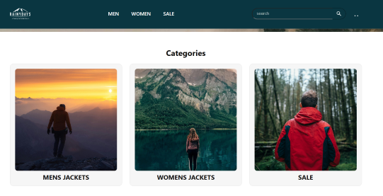
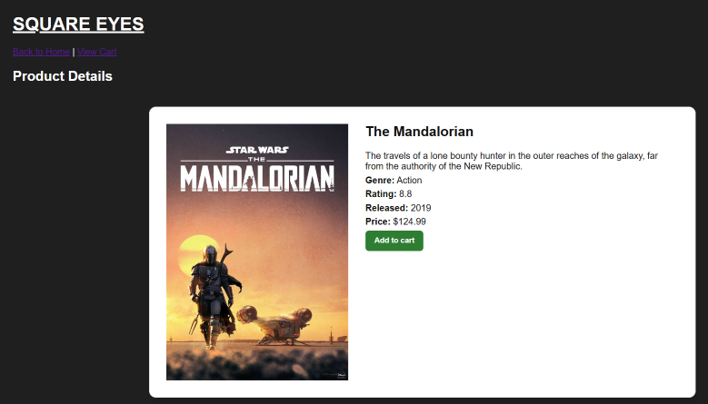
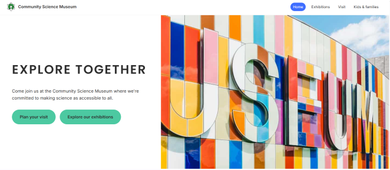

Rainy Days

An e-commerce website for outdoor wear built using HTML and CSS, with the main focus on responsive design.
GitHub Repository for Rainy Days Live website for Rainy DaysWelcome to my portfolio website.
My name is Denise Cramer, and I am a Front-end development student. This portfolio showcases projects and documents related to my first year in front-end development.

An e-commerce website for outdoor wear built using HTML and CSS, with the main focus on responsive design.
GitHub Repository for Rainy Days Live website for Rainy Days
A JavaScript-based online movie store that uses API integration and dynamic product data.
GitHub Repository for Square Eyes Live website for Square Eyes
A responsive website for a local science museum, showcasing exhibits and events. Designed for children, families, and school groups.
GitHub repository for Semester Project Fall 2025 Live website for Semester Project Fall 2025E-mail: Dencra03493@stud.noroff.no
GitHub: Denise-Cramer
LinkedIn: Denise Cramer